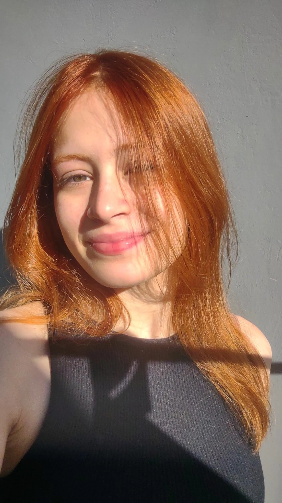
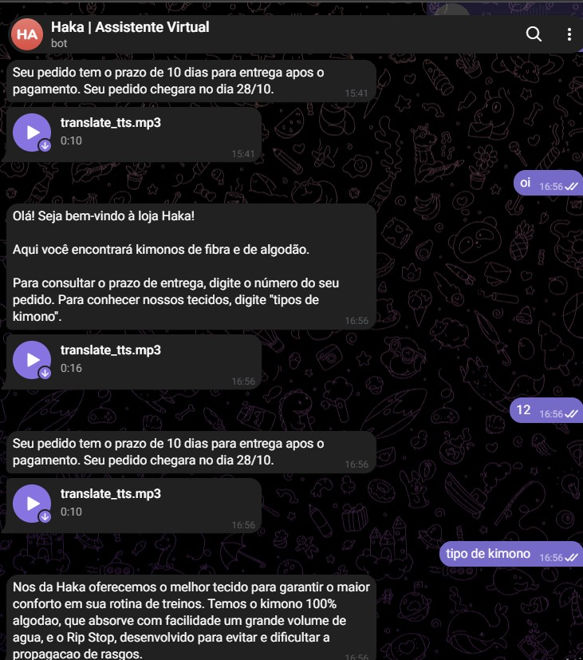

Design de Animação
Tecnólogo concluído · Faculdade Méliès
PORTFÓLIO DIGITAL 2026 — ∞
Me chamo Sofia Oliveira Gonçalves — estudante de Análise e Desenvolvimento de Sistemas e Formada em Design de Animação 3D, focando em Modelagem 3D, Renderização e Texturização 2D. Exploro o encontro entre desenvolvimento Full Stack e criação visual em 3D.

02 / QUEM ESTÁ POR TRÁS
CURIOSIDADE COMO MÉTODOMinha formação em Design de Animação me ensinou a pensar em simulação, composição, integração, modelagens, narrativas e direcionamento visual. Agora, em Análise e Desenvolvimento de Sistemas na FIAP, aprofundo a lógica e os meios por trás de muito código.
Gosto de trazer vida e personalidade às interfaces e estruturas funcionais. Meu foco está em aprender e construir projetos que unam clareza técnica e intenção estética.
DESIGN · CÓDIGOS · EVOLUÇÃOTecnólogo concluído · Faculdade Méliès
Em andamento · FIAP — unidade Paulista, São Paulo
FOCO / ESPECIALIDADES EM DESENVOLVIMENTO
Conhecimentos e frentes que fazem parte dos meus estudos e projetos.
Estrutura web, lógica de programação, Interações, animações e banco de dados.
Pesquisa visual, materiais, iluminação e construção de identidade para assets e cenários.
Automações com a Inteligência Artificial e ChatBots.
03 / CÓDIGO EM MOVIMENTO
FULL STACK JOURNEYUma coleção em evolução de projetos, experiências acadêmicas e explorações técnicas. Selecione uma área para navegar.
Projeto Conecta Campus, um site que apresenta a proposta e a estrutura de uma faculdade fictícia. Desenvolvimento de interface e experiência web.
Explorar repositório ↗01 const ideia = () => { 02 return 'em construção'; 03 } 04 05 // aprender fazendo
Repositório de práticas e estudos em desenvolvimento web realizados durante o curso da Alura.
Explorar repositório ↗~/projetos $ estudar_web
HTML
CSS
JavaScript
BUILDING KNOWLEDGE...
Práticas e exercícios desenvolvidos ao longo do Nano Course de programação web.
Explorar repositório ↗Estudos e projetos de banco de dados, modelagem relacional e consultas SQL utilizando ferramentas Oracle e SQLite.
Explorar repositório ↗Aplicações, exercícios e projetos desenvolvidos com Python, explorando lógica de programação, funções e resolução de problemas.
Explorar repositório ↗Projetos e exercícios desenvolvidos em Java, explorando lógica, orientação a objetos e construção de aplicações.
Explorar repositório ↗
Protótipo de chatbot para atendimento, com respostas e leitura de texto e áudio (STT e TTS). Desenvolvido como experimento com Node-RED.
Explorar repositório ↗NOTA Novos projetos e experimentações serão adicionados continuamente.
04 / MATÉRIA, LUZ & FORMA
3D ART · LOOK DEVELOPMENTTrês projetos que exploram Lookdev completos, de diferentes universos.
realismo · possuída · lookdev geral · modelagem feita pelo professor @Adam Stamm, da faculdade Méliès.
criatura híbrida · Naja e Cillian Murphy · modelagem · shaders · texturização · iluminação · pós produção · renderização
curta-metragem · texturização · produção completa em 3D da cidade e parte do escritório · simulação de materiais
Assistir no YouTube ↗05 / APRENDIZADO CONTÍNUO
FORMAÇÃO & CERTIFICADOSFormações que ampliam meu repertório. Selecione um certificado para visualizar em tamanho maior.
Faculdade Méliès · Tecnólogo concluído
2026Formação complementar · 60 horas
2026Formação complementar · 80 horas
202606 / PRÓXIMO CAPÍTULO
CONTATO & CONEXÕESEstou construindo meu caminho entre tecnologia e arte digital. Este espaço está aberto a trocas, ideias e conexões.
Enviar um e-mail ↗